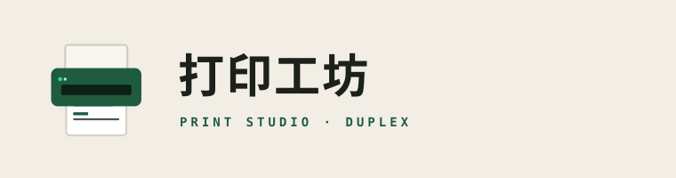

DSH PLUGIN · dsh-doc
打印工坊
PRINT STUDIO / IDENTITY
一台正在出纸的打印机——进纸、机身、出纸三层叠出，页面上已经排出标题与正文。
01 主标
512 · PLUGIN / APP
ON DARK

横排锁定版：打印机标 + 宋体字标 + 等宽副行
02 多尺寸
128
96
64
48
32
24
03 侧栏单色符号
左边是未选中，右边是选中态（绿色描边 + 浅绿底）。
24px 以下仍能看出是打印机：顶部进纸口、机身、出纸托盘。
深色主题下用 currentColor，自动跟随。
04 色板
#1F5C3F
#34D399
#B3472F
#F2EEE5
#C9DCCF
#1D211C